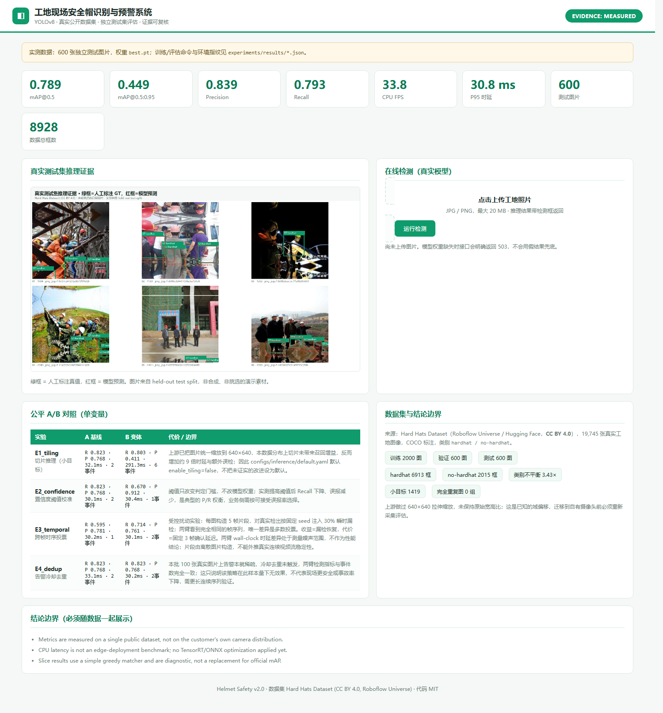
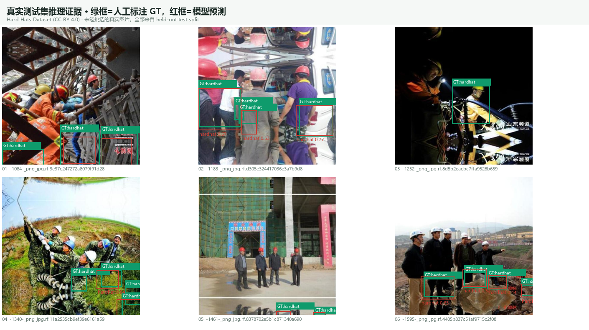

这是静态展示页：所有数字均从仓库
experiments/results/*.json 读取，由 scripts/08_build_demo_page.py 自动生成；本页不调用后端，无需安装任何环境即可查看。01 · 独立测试集实测
600 张从未参与训练与选参的 held-out test 图片 · Ultralytics 官方 model.val(split="test")
0.7893
mAP@0.5
独立 test split
0.4486
mAP@0.5:0.95
严格 IoU 区间
0.8387
Precision
全类别
0.7927
Recall
全类别
33.8 FPS
CPU 吞吐
均值 29.58 ms
30.84 ms
P95 延迟
20 次重复推理
告警类 no-hardhat：mAP@0.5 0.816，Recall 0.829。valid 选参集 mAP@0.5 0.8382 → test 0.7893，泛化落差 0.0489；对外只引用 test 数字。
02 · 系统运行界面
FastAPI + Web 看板，所有指标由实测 JSON 驱动；支持上传图片在线检测

浏览器真实截图（服务运行时截取），非设计稿。在线检测需要本地启动服务；本页为静态展示。
03 · 真实推理证据
未经挑选的 6 张真实工地照片，全部来自 held-out test split

绿框 = 标注真值（GT），红框 = 模型预测。数据集许可 CC BY 4.0，署名见 NOTICE.md。
04 · 四组单变量 A/B
同一权重、同一批 100 张真实图片、同一顺序与 seed；每次只改一个变量，同时报告收益与代价
| 实验 | 唯一变量 | Recall A→B | Precision A→B | 平均时延 A→B | 告警事件 A→B |
|---|---|---|---|---|---|
| E1_tiling 切片推理（小目标） | enable_tiling | 0.8231 → 0.8027 | 0.7683 → 0.4111 | 32.12 → 291.31 ms | 2 → 6 |
| E2_confidence 置信度阈值校准 | conf | 0.8231 → 0.6701 | 0.7683 → 0.9120 | 30.09 → 30.35 ms | 2 → 1 |
| E3_temporal 跨帧时序投票 | enable_temporal | 0.5952 → 0.7143 | 0.7812 → 0.7609 | 30.18 → 30.15 ms | 1 → 2 |
| E4_dedup 告警冷却去重 | enable_alert_dedup | 0.8231 → 0.8231 | 0.7683 → 0.7683 | 33.08 → 30.23 ms | 2 → 2 |
- E1_tiling：上游已把图片统一缩放到 640×640，本数据分布上切片未带来召回增益，反而增加约 9 倍时延与额外误检；因此 configs/inference/default.yaml 默认 enable_tiling=false，不把未证实的改进设为默认。
- E2_confidence：阈值只改变判定门槛，不改模型权重；实测提高阈值后 Recall 下降、误报减少，是典型的 P/R 权衡，业务侧需按可接受误报率选择。
- E3_temporal：受控扰动实验：每图构造 5 帧片段，对真实检出按固定 seed 注入 30% 瞬时漏检；两臂看到完全相同的帧序列，唯一差异是多数投票。收益=漏检恢复，代价=固定 3 帧确认延迟。两臂 wall-clock 时延差异处于测量噪声范围，不作为性能结论；片段由离散图片构造，不能外推真实连续视频流稳定性。
- E4_dedup：本批 100 张真实图片上告警本就稀疏，冷却去重未触发，两臂检测指标与事件数完全一致；这只说明该策略在此样本量下无效果，不代表现场更安全或事故率下降，需更长连续序列验证。
A/B 使用 class-aware greedy IoU@0.5 匹配器，不是 COCO mAP；结论只能用于模块归因，不能替代独立测试集指标。
05 · 结论边界
- Metrics are measured on a single public dataset, not on the customer's own camera distribution.
- CPU latency is not an edge-deployment benchmark; no TensorRT/ONNX optimization applied yet.
- Slice results use a simple greedy matcher and are diagnostic, not a replacement for official mAP.
完整边界见仓库 docs/BOUNDARIES.md；数据集是离散图片而非连续监控视频，时序模块不能据此证明真实视频流稳定性。
06 · 本地运行
git clone https://github.com/ljh-ningxia/helmet-safety-yolo.git cd helmet-safety-yolo pip install -r requirements.txt PYTHONPATH=src python -m helmet_safety.cli serve --port 8000 # 浏览器打开 http://127.0.0.1:8000
模型权重与原始数据不进入 Git（AGPL-3.0 权重 + CC BY 4.0 数据，且体积约 2 GB）。完整下载、训练、评估、复现流程见 docs/REPRODUCE.md；仅查看结果可直接打开本页。